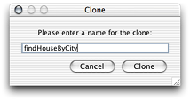

Developing Direct to Web Services Applications
This chapter describes the creation of a Direct to Web Services application. Direct to Web Services allows you to rapidly develop Web service–based applications that provide access to a data store. As other WebObjects rapid-development approaches, Direct to Web Services is a data model–based and rule-based application development approach.
You create a project called HousesForSale
, which provides a Web service with two operations, one to find information on houses for sale and another to find real-estate agents. If you don't want to create the project by hand, you can find it in projects/HousesForSale
.
The chapter contains the following sections:
The Data Model
The HousesForSale project includes the JavaRealEstate framework located in /Library/Frameworks
. The framework contains the RealEstate data-model file. The data model defines several entities; you work with only two of them: Listing and ListingAddress. Figure 4-1
shows the Listing entity definition and data from its corresponding database table; Figure 4-2
does the same for the ListingAddress entity.
Creating a Direct to Web Services Application Project
Follow these steps to create a Direct to Web Services–based application project:
-
Launch Project Builder, located in
/Developer/Applications. -
In the New Project pane of the Project Builder Assistant, select Direct to Web Services Application under WebObjects.
To create the HousesForSale project:
-
Name the project
HousesForSale. -
In the Choose EOAdaptors pane, make sure the JDBC adaptor is selected.
-
In the Choose Frameworks pane, add the JavaRealEstate framework located in
/Library/Frameworks. -
In the Build and Launch Project pane, deselect "Build and launch project now."
-
Edit the Properties file so that it looks like Listing 4-1 .
Listing 4-1 Properties file of the HousesForSale project
WOAutoOpenInBrowser false
WOPort 5210
Web Services Assistant
To customize a Direct to Web Services application you use the Web Services Assistant. It's located in /Developer/Applications
. With it you define an operation's parameters and return values. In addition, you determine whether the operation's result is returned as an array of enterprise-object instances or as a SOAP document, which can be traversed using an NSDictionary.
After you launch the Assistant, the Connect dialog
appears (Figure 4-3
). Enter http://localhost:<port>
in the text input field and click Connect.
To connect to the HousesForSale application, enter http://localhost:5210
.
Figure 4-4 shows the Web Services Assistant main window.
Initially, your application contains one Web service named WODefaultWebService, which is disabled by default. You should enable this service during development only. When the service is enabled and you add an entity to the service's Public Entity list, the Assistant creates insert
, update
, search
, and delete
operations for it, in addition to fetch-specification based operations. You can then copy those operations to a custom service, intended for public consumption. See “Using WODefaultWebService Operations”
for details.
Adding a Web Service
These are the steps you need to perform to add a Web service to a Direct to Web Services application:
-
In the Web Services Assistant main window, select the server application in the left-hand side list.
-
Click the New Service toolbar button.
-
Enter the name of the service in the Service Name text input field.
-
Select the entities you want to use in the Web service.
To add the HouseSearch Web service to the HousesForSale application:
-
Select
http://localhost:5210in the left-hand side list. -
Click New Service.
-
Enter HouseSearch in the Service Name text field.
-
Select Listing and ListingAddress in the Available list of the Public Entities pane and click the button with the left-pointing arrow.
Adding an Operation
These are the steps you need to perform to add an operation to a Web service:
-
In the Web Services Assistant, click the New Operation toolbar button.
-
Set the name and type of the operation in the New Operation dialog:
-
Enter the name of the operation in the Name text input field.
-
From the Entity pop-up menu, choose the entity the operation is to act on.
-
From the Type pop-up menu, choose the type of the operation: search, insert, update, or delete.
-
Click OK.
-
-
Define the operation's arguments and return values in the Arguments and Return Values panes, respectively.
To add the findHouseByAskingPrice
operation to the HouseSearch Web service of the HousesForSale application, follow these steps:
-
Click New Operation.
-
Enter
findHouseByAskingPricein the Name text field. -
Choose Listing from the Entity pop-up menu.
-
Make sure Type is "search."
-
Make sure HouseSearch is selected in the Services list and click OK.
-
In the main window (Figure 4-6 ), select
askingPricein the Available list in the Arguments pane and click the button with the left-pointing arrow twice. -
Select the first row of the Selected list, enter
lowin the Public Name text input field, and choose ">" from the Operator pop-up menu. -
Select the second row, enter
highin the Public Name text field, and choose "<" from the Operator pop-up menu. -
In the Return Values pane, select
askingPricefrom the Available list and click the button with the left-pointing arrow. Repeat foraddress.appNum,address.street,address.city,address.state, andaddress.zip.
Notice that the Selected list of the Return Values pane contains two columns: Property Name and Public Name. The Property Name column shows the fully qualified name of the property as shown in the Available list—including key paths—such as address.city
. The Public Name column shows the name to be used for operation parameters and return values. You can use different names for those properties, especially since periods cannot be used within the names of operation parameters and return values. The Web Services Assistant removes periods from key paths and capitalizes the first letter of each node of the key path except the first node. So, address.city
becomes addressCity
. See “Testing an Operation”
for an example response to an invocation of the findHouseByAskingPrice
operation.
Testing an Operation
To test an existing operation in the Web Services Assistant, perform these steps:
-
Select the operation you want to test from the left-hand side list.
For testing purposes, it's appropriate to select Return SOAP Struct. That setting is also appropriate when the applications that consume the operation are not WebObjects applications.
-
Click the Test toolbar button.
The Testing pane of the test window, shown in Figure 4-7 , has two panes: the Parameters pane and the Result pane. In the Parameters pane you enter the values for the operation's parameters. When you click Test, the Result pane shows the return values of the operation.
-
In the Parameters pane of the Test window, enter values for the operation's parameters and click Test.
To test the findHouseByAskingPrice
operation of the HouseSearch service of the HousesForSale example, follow these steps:
-
Select
findHouseByAskingPriceunder HouseSearch underhttp://localhost:5210. -
Select Return SOAP Struct.
-
Click the Test toolbar button.
-
Enter
250000in the Low text input field,350000in the High text field, and click Test.
Using WODefaultWebService Operations
Although creating operations is made easy by the Web Services Assistant, you may want to get a head start. When you add entities to the WODefaultWebService service, the Assistant adds four operations: insert
, update
, search
, and delete
. By default only the search
operation is enabled. In addition, operations are created for all fetch specifications defined in the data model for the entity.
To use an operation from WODefaultWebService in another Web service provided by the same application, follow these steps:
-
In the Web Services Assistant, select WODefaultWebService in the left-hand side list.
-
Add the necessary entities to the Public Entities list of WODefaultWebService.
Note that you cannot delete automatically generated operations from WODefaultWebService. But you can remove an entity from the Public Entities list, which removes all the automatically generated operations based on that entity.
-
Select the operation of WODefaultWebService you want to use in another Web service.
-
Click the Clone toolbar button.
-
In the Clone dialog, enter a name for the new operation and click Clone.
-
Select the new operation in the left-hand side list and display the Services pane.
-
Select the Web service you want to add the operation to in the Available list and click the button with the left-pointing arrow.
You can remove the operation from WODefaultWebService by selecting WODefaultWebService in the Selected list and clicking the "–" button.
To create the findHouseByCity
operation for the HouseSearch Web service, based on the automatically generated searchListingAddress
operation of WODefaultWebService, follow these steps:
-
In the Web Services Assistant, select WODefaultWebService under
http://localhost:5210. -
In the Public Entities pane, select ListingAddress in the Available list and click the button with the left-pointing arrow.
Web Services Assistant adds four operations to WODefaultWebService:
deleteListingAddress,insertListingAddress,searchListingAddress, andupdateListingAddress. Notice that only thesearchListingAddressoperation is enabled. -
Select
searchListingAddressunder WODefaultWebService. -
Click the Clone toolbar button, enter
findHouseByCityin the text input field of the Clone dialog, and click Clone. -
Select
findHouseByCityunder WODefaultWebService. -
In the Services pane, select HouseSearch in the Available list and click the button with the left-pointing arrow.
-
In the Selected pane, select WODefaultWebService and click the "–" button. The operation is now part of the HouseSearch Web service.
-
Select
findHouseByCityunder HouseSearch and display the Arguments pane. -
Select the
aptNumproperty in the Selected list and click the button with the minus sign. Repeat forstreetandzip. -
In the Return Values pane, remove all properties from the Selected list.
-
Select
listing.askingPricein the Available list and click the button with the left-pointing arrow. Repeat forlisting.bathrooms,listing.bedrooms, andlisting.yearBuilt. -
Select Return SOAP Struct and test the operation.
Observing SOAP Messages Using TCPMonitor
Sometimes you may find it useful to see the SOAP messages as they are transmitted between Web service consumers and providers. Follow these steps to observe the communication that occurs between the Web Services Assistant and your Direct to Web Services application:
-
Make sure the Web Services Assistant is not connected to the Direct to Web Services application whose communication you want to monitor and that the application itself is not running.
-
In Project Builder, add a custom rule file called
d2w.d2wmodel(if it doesn't already exist), and assign it to the Application Server target. See “Creating a Custom Rule File” for details. -
Open
d2w.d2wmodelin Rule Editor.Control-click
d2w.d2wmodeland choose "Open with Finder." -
In Rule Editor, add the following rule and save the
d2w.d2wmodelfile:-
Left-Hand Side:
(serviceName = '<serviceName>'). -
Key:
serviceLocationURL. -
Value:
"http://<host>:<TCPMonitorListenPort>/cgi-bin/WebObjects/<applicationName>.woa/ws/<serviceName>". -
Priority:
50.
-
-
Launch TCPMonitor by double-clicking TCPMonitor in
/Developer/Examples/JavaWebObjects, and enter the appropriate values in the Listen Port and Target Port text input fields, the port that TCPMonitor monitors and your application's port, respectively. Click Add. -
In the Web Services Assistant, connect to your application through the port that TCPMonitor monitors.
To observe the communication that happens between the Web Services Assistant and HousesForSale, follow these steps:
-
In the Web Services Assistant, save the application's Web service configuration and close the Web Services Assistant window.
-
In Project Builder, add a custom rule file named
d2w.d2wmodelto the application project if it doesn't already exist. -
Open the
d2w.d2wmodelfile in Rule Editor and add the following rule:-
Left-Hand Side:
(serviceName = 'HouseSearch'). -
Key:
serviceLocationURL. -
Value:
"http://localhost:5299/cgi-bin/WebObjects/HousesForSale.woa/ws/HouseSearch". -
Priority:
50.
-
-
Save the
d2w.d2wmodelfile and build and run the application. -
Launch TCPMonitor.
-
Enter
5299in the Listen Port text input field and5210in the Target Port text field and click Add. -
Display the Port
5299pane of TCPMonitor. -
In the Web Services Assistant, enter
http://localhost:5299in the text input field of the Connect dialog and click Connect.Notice that TCPMonitor shows you the request and response documents as the Web Services Assistant communicates with the HousesForSale application.
-
If you test the
findByCityorfindByAskingPriceoperations, TCPMonitor logs the SOAP request the Assistant sends to the application as well as the response sent by the application as shown in Figure 4-8 .
Freezing Operations
You can freeze operations when you need to customize their workings. Frozen operations take the form of Web components in your application project. When you freeze an operation, the parts of the Web service's WSDL document that correspond to the operation are frozen as well. In addition, you cannot use the Web Services Assistant to customize further a frozen operation; for example, you cannot add or remove arguments or return values with the Assistant. If you need to do so, you have to edit the Java file and WSDL document manually.
The following list itemizes the steps needed to freeze an operation.
-
In the Web Services Assistant, select the operation you want to freeze and click the Freeze toolbar button. In the Freeze dialog, enter the name of the frozen-operation component and click Freeze.
The Assistant adds the FindHouseByCity component to the HouseForSale project, as shown in Figure 4-9 .
-
Save the Web service configuration and close the Web Services Assistant window.
-
Restart the application.
The WSDL document corresponding to a frozen operation is stored in the HTML file of the corresponding component. Listing 4-2
shows the WSDL document for the frozen findHouseByCity
operation.
Listing 4-2 The WSDL document of the frozen findHouseByCity operation—the HTML file of the FindHouseByCity component
<?xml version="1.0"?> |
<definitions name="[AnyService]Definition" |
xmlns:soap="http://schemas.xmlsoap.org/wsdl/soap/" |
xmlns:xsd="http://www.w3.org/2001/XMLSchema" |
xmlns:tns="http://17.203.33.19/cgi-bin/WebObjects/HousesForSale.woa/ws/ |
[AnyService]/wsdl" |
xmlns="http://schemas.xmlsoap.org/wsdl/" |
xmlns:lang="http://lang.java/" |
xmlns:wsdl="http://schemas.xmlsoap.org/wsdl/" |
xmlns:soapenc="http://schemas.xmlsoap.org/soap/encoding/" |
xmlns:webobjects="http://www.apple.com/webobjects/webservices/soap/" |
targetNamespace="http://17.203.33.19/cgi-bin/WebObjects/HousesForSale.woa/ws/ |
[AnyService]/wsdl"> |
<types> |
</types> |
<message name="findHouseByCityInput"> |
<part type="xsd:string" name="city"/> |
<part type="xsd:string" name="state"/> |
</message> |
<message name="findHouseByCityOutput"> |
<part type="xsd:anyType" name="return"/> |
</message> |
<message name="WSDLInput"> |
</message> |
<message name="WSDLOutput"> |
<part type="xsd:anyType" name="return"/> |
</message> |
<message name="beginTransactionInput"> |
</message> |
<message name="beginTransactionOutput"> |
<part type="xsd:anyType" name="return"/> |
</message> |
<message name="commitTransactionInput"> |
</message> |
<message name="commitTransactionOutput"> |
<part type="xsd:anyType" name="return"/> |
</message> |
<message name="rollbackTransactionInput"> |
</message> |
<message name="rollbackTransactionOutput"> |
<part type="xsd:anyType" name="return"/> |
</message> |
<portType name="[AnyService]PortType"> |
<operation name="findHouseByCity" parameterOrder="city state"> |
<input message="tns:findHouseByCityInput"/> |
<output message="tns:findHouseByCityOutput"/> |
</operation> |
<operation name="WSDL"> |
<input message="tns:WSDLInput"/> |
<output message="tns:WSDLOutput"/> |
</operation> |
<operation name="beginTransaction"> |
<input message="tns:beginTransactionInput"/> |
<output message="tns:beginTransactionOutput"/> |
</operation> |
<operation name="commitTransaction"> |
<input message="tns:commitTransactionInput"/> |
<output message="tns:commitTransactionOutput"/> |
</operation> |
<operation name="rollbackTransaction"> |
<input message="tns:rollbackTransactionInput"/> |
<output message="tns:rollbackTransactionOutput"/> |
</operation> |
</portType> |
<binding type="tns:[AnyService]PortType" |
name="[AnyService]SoapBinding"><soap:binding style="rpc" |
transport="http://schemas.xmlsoap.org/soap/http"/> |
<operation name="findHouseByCity"> |
<soap:operation soapAction="http://17.203.33.19/cgi-bin/WebObjects/ |
HousesForSale.woa/ws/[AnyService]/wsdl"/> |
<input> |
<soap:body use="encoded" namespace="http://17.203.33.19/cgi-bin/WebObjects/ |
HousesForSale.woa/ws/[AnyService]/wsdl" encodingStyle= |
"http://schemas.xmlsoap.org/soap/encoding/"/> |
</input> |
<output> |
<soap:body use="encoded" namespace="http://17.203.33.19/cgi-bin/WebObjects/ |
HousesForSale.woa/ws/[AnyService]/wsdl" encodingStyle= |
"http://schemas.xmlsoap.org/soap/encoding/"/> |
</output> |
</operation> |
<operation name="WSDL"> |
<soap:operation soapAction="http://17.203.33.19/cgi-bin/WebObjects/ |
HousesForSale.woa/ws/[AnyService]/wsdl"/> |
<input> |
<soap:body use="encoded" namespace="http://17.203.33.19/cgi-bin/WebObjects/ |
HousesForSale.woa/ws/[AnyService]/wsdl" encodingStyle= |
"http://schemas.xmlsoap.org/soap/encoding/"/> |
</input> |
<output> |
<soap:body use="encoded" namespace="http://17.203.33.19/cgi-bin/WebObjects/ |
HousesForSale.woa/ws/[AnyService]/wsdl" encodingStyle= |
"http://schemas.xmlsoap.org/soap/encoding/"/> |
</output> |
</operation> |
<operation name="beginTransaction"> |
<soap:operation soapAction="http://17.203.33.19/cgi-bin/WebObjects/ |
HousesForSale.woa/ws/[AnyService]/wsdl"/> |
<input> |
<soap:body use="encoded" namespace="http://17.203.33.19/cgi-bin/WebObjects/ |
HousesForSale.woa/ws/[AnyService]/wsdl" encodingStyle= |
"http://schemas.xmlsoap.org/soap/encoding/"/> |
</input> |
<output> |
<soap:body use="encoded" namespace="http://17.203.33.19/cgi-bin/WebObjects/ |
HousesForSale.woa/ws/[AnyService]/wsdl" encodingStyle= |
"http://schemas.xmlsoap.org/soap/encoding/"/> |
</output> |
</operation> |
<operation name="commitTransaction"> |
<soap:operation soapAction="http://17.203.33.19/cgi-bin/WebObjects/ |
HousesForSale.woa/ws/[AnyService]/wsdl"/> |
<input> |
<soap:body use="encoded" namespace="http://17.203.33.19/cgi-bin/WebObjects/ |
HousesForSale.woa/ws/[AnyService]/wsdl" encodingStyle= |
"http://schemas.xmlsoap.org/soap/encoding/"/> |
</input> |
<output> |
<soap:body use="encoded" namespace="http://17.203.33.19/cgi-bin/WebObjects/ |
HousesForSale.woa/ws/[AnyService]/wsdl" encodingStyle= |
"http://schemas.xmlsoap.org/soap/encoding/"/> |
</output> |
</operation> |
<operation name="rollbackTransaction"> |
<soap:operation soapAction="http://17.203.33.19/cgi-bin/WebObjects/ |
HousesForSale.woa/ws/[AnyService]/wsdl"/> |
<input> |
<soap:body use="encoded" namespace="http://17.203.33.19/cgi-bin/WebObjects/ |
HousesForSale.woa/ws/[AnyService]/wsdl" encodingStyle= |
"http://schemas.xmlsoap.org/soap/encoding/"/> |
</input> |
<output> |
<soap:body use="encoded" namespace="http://17.203.33.19/cgi-bin/WebObjects/ |
HousesForSale.woa/ws/[AnyService]/wsdl" encodingStyle= |
"http://schemas.xmlsoap.org/soap/encoding/"/> |
</output> |
</operation> |
</binding> |
<service name="[AnyService]"> |
<port name="[AnyService]Port" binding="tns:[AnyService]SoapBinding"> |
<soap:address location="http://17.203.33.19/cgi-bin/WebObjects/ |
HousesForSale.woa/ws/[AnyService]/wsdl"/> |
</port> |
</service> |
</definitions> |
In addition to the findHouseByCity
operation, the frozen WSDL document defines four additional operations: WSDL
, beginTransaction
, commitTransaction
, and rollbackTransaction
. The WSDL method can returns the WSDL document for the Web service. Consumers can use the rest of the additional operations to implement rudimentary transaction processing. For more information, see “Using Transactions”
.
Unfreezing Operations
To unfreeze a frozen operation follow these steps:
-
In the Web Services Assistant, select the operation you want to unfreeze.
-
Click Unfreeze in the Freezing pane.
-
Save the Web service configuration.
-
In Project Builder, delete the corresponding component.
-
Select the component under the Web Components group.
-
Choose Edit > Delete.
-
In the Delete References dialog, click Delete References & Files.
-
Component-Based Operations
“Freezing Operations”
indicated that when you freeze an operation, the operation's WSDL document as well as its parameters and return values cannot be customized using the Web Services Assistant. However, you can create custom operations whose WSDL document is dynamically generated. For that you need to copy the templates/Direct to Web Services Operation.pbfiletemplate.pbfiletemplate
to /Developer/ProjectBuilder Extras/File Templates/WebObjects
.
Follow these steps to create an operation with a dynamic WSDL document for the HousesForSale application:
-
Create an operation using the Web Services Assistant.
-
Save the Web service configuration and close the Web Services Assistant window.
-
In Project Builder, select the Web Components group and add a Direct to Web Services Operation component with the same name of the operation added in the Web Services Assistant.
To confirm that the component's
invokemethod is invoked, edit theinvokemethod of its Java file so that it like this:public Object invoke() {System.out.println("LogIn operation invoked.");return super.invoke();
}
-
Add the following rule to the
d2w.d2wmodelfile:-
Left-Hand Side:
(operationName = 'LogIn'). -
Key:
operationClassName. -
Value:
"LogIn". -
Priority:
50.
-
-
Save
d2w.d2wmodel. -
Rebuild and run the application.
-
Connect to the application through the Web Services Assistant.
-
Test the operation. Make sure that you see the test output in the console (Project Builder's Run pane).
Operations Derived From Fetch Specifications
When you make public an entity with fetch specifications in the Web Services Assistant, the Assistant creates operations corresponding to those fetch specifications. You can see the arguments the operations require and the return values in the Arguments pane and the Return Values panes, respectively.
To modify an operation that is based on a fetch specification from a data model, you must edit the fetch specification in the model and rebuild the application.
Using Transactions
Direct to Web Services supports light-weight transactions. These transactions are editing context–based and cannot be nested. See the reference documentation for com.webobjects.eocontrol.EOEditingContext
for more information on editing contexts.
When you select Allows Transactions in the Web Services Assistant for a given Web service and restart the service-provider application, three additional operations become available: beginTransaction
, commitTransaction
, and rollbackTransaction
. These transactions are not visible in the Assistant, but you can view them in the Web service's WSDL document. The following list provides an overview of each operation.
-
beginTransaction: You invoke this operation before invoking operations that modify data in a data store. After invoking the operation, calls toEOEditingContext.saveChangesInEditingContexthave no effect. To learn more, see the reference documentation for WOBeginTransactionOperation incom.webobjects.webservices.generation. -
commitTransaction: Saves the changes made to the editing context (com.webobjects.eocontrol.EOEditingContext) used by the Web service. To learn more, see the reference documentation for WOCommitTransactionOperation incom.webobjects.webservices.generation. -
rollbackTransaction: Resets the editing context used by the Web service. To learn more, see the reference documentation for WORollbackTransactionOperation incom.webobjects.webservices.generation.
Using Global IDs
Using the Return SOAP Struct option in the Web Services Assistant you can determine whether an operation returns a SOAP-struct
element or one or more enterprise objects. When an operation is invoked from other WebObjects applications, you should not select Return SOAP Struct. That way the client application can access data, such as global IDs with relative ease.
Sometimes you may need to create operations that create enterprise objects that are part of a relationship. For example, Figure 4-10
shows the relationships between two data entities: the books
relationship of Authors and the author
relationship of Book.
Also notice that the authorId
attribute of Book is part of the entity's primary key. This means that a Book enterprise object cannot be added to the data store without a value for the authorId
attribute. (You cannot add a book to the data store without a corresponding author.) Creating an operation in Web Services Assistant that creates an author record and a book record is not possible. However, a method in a client of an Author Web service can invoke the addAuthor
and addBook
operations to perform the procedure. For that, you have to use global IDs (com.webobjects.eocontrol.EOKeyGlobalID).
Listing 4-3
shows a possible implementation of such a method, named addBookForAuthor
, while Listing 4-4
shows the methods that invoke the Web service operations that interact with the data store.
Listing 4-3
addBookForAuthor
method
/** |
* Adds a book and an author to the data store. |
* @param title book's title; |
* @param authorLastName last name of the author; |
* @param authorFirstName first name of the author; |
* @return <code>true</code> when successful; <code>false</code> otherwise. |
*/ |
public boolean addBookForAuthor(String title, String authorLastName, |
String authorFirstName) { |
EOKeyGlobalID author_global_id = addAuthor(authorLastName, authorFirstName); |
addBook(title, author_global_id); |
return true; |
} |
Listing 4-4
addAuthor
and addBooks
methods
/** |
* Adds an author to the data store. |
* @param authorLastName last name of the book's author; |
* @param authorFirstName first name of the book's author; |
* @return global ID of the corresponding enterprise object. |
*/ |
private EOKeyGlobalID addAuthor(String lastName, String firstName) { |
Object arguments[] = {lastName, firstName}; |
Object[] result = (Object[])serviceClient().invoke(serviceName(), |
"addAuthor", arguments); |
WOStringKeyMap key_map = (WOStringKeyMap)result[0]; |
EOKeyGlobalID author_global_id = (EOKeyGlobalID)key_map.valueForKey("globalID"); |
return author_global_id; |
} |
/** |
* Adds a book to the data store. |
* @param title book's title; |
* @param author_global_id global ID of the enterprise object representing |
* the book's author; |
* @return <code>true</code> when successful; <code>false</code> otherwise. |
*/ |
private boolean addBook(String title, EOKeyGlobalID author_global_id) { |
Object arguments[] = {title, author_global_id}; |
Object result = serviceClient().invoke(serviceName(), "addBook", arguments); |
return true; |
} |
Figure 4-11
shows the definition of the addBook operation. Notice the author
argument.
The projects
directory includes two projects Authors and Authors_Client that demonstrate the concepts described earlier. To run them you must install the Authors database, located in the databases
directory.
Default Return Values of Operations
Table 4-1 shows the return values of operations for which you don't enter return values in the Return Values pane.
|
Type of operation |
Return value |
|---|---|
|
Global ID of enterprise object created. |
|
|
Array of updated enterprise objects. |
|
|
Array of found enterprise objects. |
|
|
Empty array. |
Creating a Custom Rule File
When you need to perform advanced customization in a Direct to Web Services application, you may have to create a custom rule file named d2w.d2wmodel
in which you place custom rules. The other rule file, user.d2wmodel
, is for the exclusive use of the Web Services Assistant. You must not edit user.d2wmodel
.
To add the d2w.d2wmodel
file to a Direct to Web Services application project, add a new, empty file to the Resources group, name the file d2w.d2wmodel
, and assign it to the Application Server target
Rule Editor Keys
Table 4-2
lists the keys you can use in the d2w.d2wmodel
file of a project to customize a Direct to Web Services application. To learn more, see the reference documentation for WOServiceUtilities.RuleSystemConstants in the com.webobjects.webservices.generation
package.
|
Key |
Description |
|---|---|
|
|
The names of all the operations available in a Web service. |
|
|
The names of all the Web services available in an application. |
|
|
The class of a property. |
|
|
The class name of a property. |
|
|
The EOKeyComparisonQualifier used to build an EOQualifier for a property. |
|
|
The entity name for an operation. |
|
|
The |
|
|
The name of the fetch specification used in a WOFetchSpecSearchOperation. |
|
|
Determines whether an enterprise object is to be serialized as an EOGlobalID. |
|
|
The XML element names of an operation's input-message parts. |
|
|
The arguments in an operation invocation. |
|
|
Determines whether a Web service is the default Web Service in a Direct to Web Services application. |
|
|
Determines whether an operation is enabled. |
|
|
Determines whether an operation is frozen. |
|
|
Determines whether a Web service is enabled. |
|
|
Determines whether a Web services supports transactions. |
|
|
The EOModelGroup of the current operation. |
|
|
The class name of an operation. |
|
|
The name of an operation. |
|
|
The names of the operations of a Web service. |
|
|
The XML element names of the properties an operation returns. |
|
|
A property key. |
|
|
The names of the public entities available in a Direct to Web Services application. |
|
|
Determines whether an operation returns EOEnterpriseObjects as serialized enterprise objects or a SOAP structures. |
|
|
The name of a Web service. |
|
|
The EOProperty key path for an argument or result value. |
|
|
The key used to determine whether a parameter is unspecified. |
|
|
Determines whether an operation uses a named fetch specification. |
|
|
The WOContext. |
|
|
The name of the default Web service. |
|
|
The name of the component containing the WSDL document for an operation. |
© 2002, 2007 Apple Inc. All Rights Reserved. (Last updated: 2007-07-11)